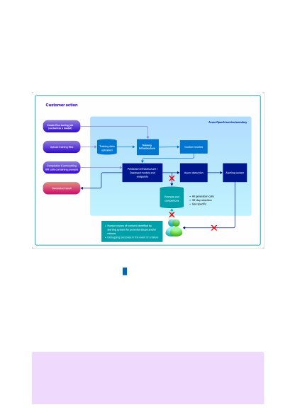

Limited Access eligibility criteria and attest to specific use cases to apply to modify the
Azure OpenAI content management features.
If Microsoft approves a customer's request to modify abuse monitoring, then Microsoft
does not store any prompts and completions associated with the approved Azure
subscription for which abuse monitoring is configured off. In this case, because no
prompts and completions are stored at rest in the Service Results Store, the human
review process is not possible and is not performed.
Customers can apply for modified abuse monitoring here:
https://aka.ms/oai/modifiedaccess .
There are two ways for an approved customer to verify that logging for abuse
monitoring has been turned off in their approved Azure subscription: (1) Azure portal or
(2) Azure CLI (or any MGMT API).
How can a customer verify if logging for abuse
monitoring is off?
７
Note
Note: The value of "false" for the "ContentLogging" attribute appears only if
logging is turned off. Otherwise, this property will not appear in either Azure portal